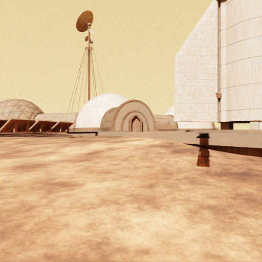
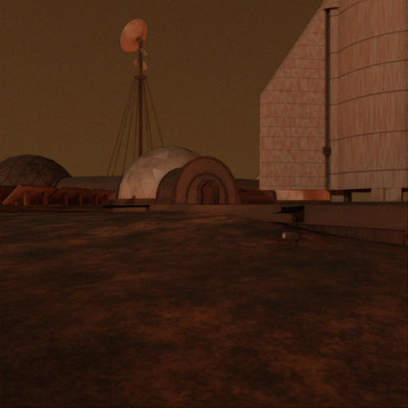

Solar geometry
Elevation e determines zenith angle z. Azimuth changes shadow direction.
Azimuth 70° → 280° · elevation 32°
Open-source · ROS2-native · NVIDIA Isaac Sim
A Martian Rover Simulator for
Planetary Rover Autonomous Navigation
1Department of Robotics and Mechatronics Engineering, DGIST
Future Mars missions will require rover autonomy that can operate across unstructured terrain, changing illumination, atmospheric dust, and limited communication. Simulation is a practical way to study these conditions before deployment, but existing Mars-relevant resources differ in scope, including mission-oriented simulators, fixed analog datasets, task-specific environments, and open robotics interfaces.
We present MarsLab, an open-source, ROS2-native Mars rover simulator for autonomy and navigation algorithm development. MarsLab combines HiRISE-derived and procedural terrain with customizable rock, crater, solar-illumination, and atmospheric-dust settings, and runs a Perseverance-class rover model in NVIDIA Isaac Sim. The runtime publishes RGB, depth, RGB-D point clouds, LiDAR, IMU, wheel odometry, and ground-truth pose data through standard ROS2 topics.
We demonstrate MarsLab with SLAM benchmarks across sensing modalities, dust levels, scene geometry, and route length, and with visual place recognition benchmarks over repeated Mars Base traversals under illumination and dust changes. Controlled scene variation and shared ground-truth trajectories enable trajectory-level and image-level evaluation within the same simulator.
Free-camera terrain exploration, synchronized rover sensors, and actual SLAM experiment replay. No installation required.
Replay the same experiment across terrain geometry, landmarks, illumination, and atmospheric dust.
Elevation e determines zenith angle z. Azimuth changes shadow direction.
Azimuth 70° → 280° · elevation 32°

Increasing τ attenuates the direct solar beam; m(z) is relative optical airmass.
Continuous rendering: τ = 0.3 → 6.0 ·
Geometry is unchanged; the renderer also accounts for diffuse sky illumination.
[28] J. Appelbaum and D. J. Flood, “Solar radiation on Mars,” Solar Energy, vol. 45, no. 6, pp. 353–363, 1990.
Absolute Trajectory Error RMSE after Umeyama SE(3) alignment. Lower is better.
LiDAR remains sub-metre while RGB degrades 7.9× under dense dust.
Camera methods are evaluated at τ = 0.5 and τ = 6.0. MOLA uses LiDAR, which is unaffected by the radiance-only dust model.
Repeated Mars Base traversals test place retrieval under illumination and dust changes.


BoQ · Day/Dark91.44%
BoQ · Dust94.65%
BoQ ranks first in both protocols. NetVLAD follows, while AnyLoc recovers strongly by R@10.
MarsLab provides repeatable Mars autonomy experiments through standard ROS2 interfaces.
@article{kim2026marslab,
title = {MarsLab: A Martian Rover Simulator for
Planetary Rover Autonomous Navigation},
author = {Kim, Hoyun and Kim, Beomsu and Kim, Giseop},
year = {2026}
}Isaac Sim 5.1 · ROS2 Jazzy · HiRISE-derived terrain